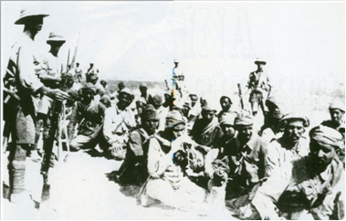

14–15 Ocak 1915 gecesi Ahmet Cemal Paşa’nın komutası altında Gazze–Bîrüssebi–Maan hattından iki kademe halinde Kanal’a karşı ileri harekete başlamıştık.
Birinci kademeye 8. Kolordu kumandanı komuta ediyordu. Bu kademe esas kuvvetleri olan 8 piyade taburu, 3 bölüklü bir hecinsüvar alayı, 4 sahra bataryası, bir 15 santimetrelik ağır obüs bataryası, 5 istihkâm bölüğü, 5 köprücü takımı, 2 sıhhiye bölüğü ve 3 seyyar hastaneden ibaret olarak 25. Tümen Komutanı Yarbay Ali Fuat’ın (Cebesoy) komutası altında Bîrüssebi–Hafirülavce–İbin üzerinden İsmailiye’ye; 5 piyade bölüğü, 2 batarya, bir yarım sıhhiye bölüğünden ve yaklaşık bin kadar gönüllü süvari Bedevîden oluşan bir yan kol da Gazze’den El Ariş üzerinden Kantara’ya; 4 piyade bölüğü, bir batarya yarım sıhhiye bölüğü ve 600 gönüllüden oluşan diğer bir müfreze de Makedonya çete reislerinden ve hakkında kötü haberler duyulan bir zatın komutası altında Nahil üzerinden Süveyş’e yürüyecekti. Ortada hareket eden kola, yedi cephane, bir malzeme, on erzak ve elli su yüklü deve kolu; Kantara ile Süveyş üzerine yürüyen diğer tâli kollara da onar deve kolu verilmişti.
Dört-beş günlük aralıkla İsmailiye üzerine hareket eden kolu, ikinci kademe olarak Alman Albayı Trommer’in komutası altında 10. Türk Tümeni’nden iki piyade alayı ve bir topçu taburundan oluşan diğer bir kol takip ediyordu. Bu iki kademe arasında dört-beş günlük bir mesafenin bulunması gerekiyordu; çünkü bu suretle birinci kademe tarafından kullanılan sularla boşaltılmış olan su alınan yerler ikinci kademenin ulaşmasına kadar tekrar dolabilecekti.
Birinci kademenin mevcudu 9.886 er, 801 at, 1.792 deve, 328 manda ve ikinci kademeninki ise yaklaşık 8.000 erden ibaretti. Kolların 7.500 devesiyle bunlara bakan erlerin sayısı bu rakamlara dâhil değildir. Hastalar, zayıflar, acemilerle araba ve ağırlıkların tamamı çöl sınırında alıkonulmuştu. Faydalı olmayan ne bir insan ve ne de bir hayvan seferî kuvvetin yükünü boşuna yere arttırmayacaktı. Beraber taşınacak eşya da asgari bir ağırlığa indirilmişti. Subaylar on beş kilodan fazla eşya götüremeyeceklerdi. 8. Kolordu’da sahra mutfakları olmadığı gibi portatif çadırlar da yoktu. On beş gün devam eden bu harekât esnasında, kolordu komutanı da dâhil olmak üzere bütün seferî kuvvet mensupları açıkça uyumuşlardı. İnsan ve hayvan için su miktarı sınırlandırılmış ve çok kıymetli olan bu suyun temizlik için sarfedilmesi kesin olarak yasaklanmıştı. Alışılmış olan yıkanma ve temizlikten vazgeçmek mecburiyeti harekâtın başında bize en fazla azap veren bir zorunluluktu. Fakat mecbur kalınınca insan her şeye alışır ve nitekim biz de bir müddet sonra bu mahrumiyete alışmış bulunuyorduk.
İki mola gününde verilen sıcak çorba müstesna olmak üzere, Türk subay ve erleri 600 gram peksimet ve bir avuç üzüm veya hurma veyahut zeytinle yaşıyorlardı. Bu taş gibi katı, lezzeti tutkala benzeyen peksimeti hatırladıkça bugün bile dehşet duyarım. O zamanki menzil hizmetlerinin getirdiği zorluklar karşısında çölü geçmeye ancak böyle bir kanaatkâr birlik ile cesaret edilebilirdi. Bu şartlar altında bile insanlar memnun, sıhhatte ve zinde idiler. Yolda rastladığım bir bölüğün erlerinin hatırını sorduğum vakit, yalnız neşeli yüzler görmüştüm ve yaşlı bir erbaş bana cevaben; “Buna harp denmez, çünkü her gün yiyecek veriliyor” demişti. Kanal’a ulaşıncaya kadar ne hayvan ve ne de insan kaybı vermemiştik. Yalnız bin kişiden bir hasta çıkmıştı. Hâlbuki erlerin büyük bir kısmı çıplak ayak yürüyorlardı. Bu da kısmen işe yarar ayakkabı alamadıklarından böylece yürümek kendilerine daha kolay geliyordu. Erlere kolaylık sağlamak için arka çantalarını da hudut mıntıkasında bırakmıştık! Aslında fakir Türk erlerinin çantalarının içine koyacak bir şeyleri de yoktu.
Asgari bir gıda ile yetinmek mecburiyeti insanlardan ziyade develere güç geliyordu. Kendilerine tahsis edilen günde üç kilo arpa bunlara güçlükle yetiyor ve bu sebepten binlerce deve ölüyordu. Yine birçok hayvan gıda yetersizliği sonucu çok zayıf düştüklerinden semerler sırtlarını vuruyor ve bundan dolayı sırtlarında büyük yaralar açılıyor ve haftalarca istifade edilemeyecek bir hâle geliyorlardı. Atlara günde beş kilo arpa veriliyor fakat saman, ot gibi yemler bulunamıyordu.
İleri hareket sırasında biz yalnız geceleri yürüyorduk. Bunun sebebi sadece düşman uçaklarının keşiflerinden gizlenmek değil, aynı zamanda gündüzün hararet derecesinin çok yüksek olmasından dolayı insan ve hayvanlara muhtaç olunan suyu verebilecek bir durumda olmadığımızdandı. Her gece kuvvetli nem düşmekte, bu rutubet altında zehir gibi esen rüzgârlardan dolayı bu sonsuz gece yürüyüşlerinde çok zahmet çekilmekteydi.
Bataryalarımız ve özellikle sekiz kuvvetli manda koşulu ağır obüslerimiz, vadilerin ve kumlu kısımların geçilmesinde büyük zorlukları göğüslemek mecburiyetindeydiler. Şam’daki demiryolu atölyelerinde, top tekerlekleri üstüne takılıp çıkarılabilen yaklaşık 35 santim genişliğinde tekerlek tabanları hazırlatmıştık. Bu tabanlar develer tarafından taşınıyor ve yalnız geçilmesi güç olan yerlerde tekerleklere takılıyordu. Bu şekilde bunlar, tekerleklerin kuma gömülmesine engel olduklarından çok işe yaramışlardı. Engelleri aşmakta hayvanlar iş göremediler mi derhal insanlar imdada yetişiyor zorlukları aşıyorlardı. Çöldeki bu yürüyüşlerde topçu birliklerine verilen piyade erlerinin gördükleri hizmet her türlü takdir ve övgünün üstündedir.
Hafirülavce’de bir günlük mola verilmişti. Cemal Paşa’nın emri ile Kanal’a karşı harekette seferî kuvvete refakat etmek mecburiyetinde olan Arap hocaları –bunların bir çeşit rehine olduklarını tahmin ediyorum– kolordu komutanının maiyetiyle beraber hayvan üzerinde ordugâhtan ordugâha gidiyor ve erleri Sancak-ı Şerif’in huzurunda and içiriyordu. Atların sırtında bu hocalar ateşli nutuklar veriyorlardı. Bunların belâgati ve çok güzel jestleri, manasını anlamadığımız halde biz Almanları bile etkiliyordu. Sıradan erlere ise nutuklar o kadar tesir ediyordu ki, bunlardan bir kaçının histerik krizler geçirdiğine ve kramplara tutulduğuna şahit oluyorduk.
Dere tepe düz gitmek şartıyla altı gecelik bir yürüyüşle Kanal’ın yaklaşık 50 kilometre doğusunda bulunan Birinci Habra ile Hafirülavce arasındaki 200 kilometrelik büyük mesafeyi kat’etmiş bulunuyorduk. İlk günde su ihtiyacımızı Vadi-i Ariş’ten sağlamıştık. Buradaki çukurlar içerisinde, yağan yağmurlardan yeterli miktarda su kalmıştı. Çöldeki kum adalarında bulunan Bir-i Hamme ile İkinci Habra’da bulunan iki menzil noktasında, birkaç istihkâm bölüğü ile birlikte ileri gönderilerek su çıkarmakla görevlendirilmiş olan Adolf Ficher –Afrika’daki kolonilerimizde tecrübe görmüş ve öne çıkmış bir subay– su çıkarmaya muvaffak olmuştu. Ficher, o kumluk arazide birkaç metre derinliğinde uzun hendekler açtırmış ve bunlarda da yavaş yavaş yeterli miktarda su biriktirmiş ve su dağıtımını kolaylaştırmak için pek çok su alma yerinde köprücü takımının demir tombazlarını koydurmuş ve bunların içerisini birliklerin varışından önce su ile doldurtmuştu –bu şüphesiz tecrübeli sömürge subayının diğer bütün tertibatı gibi çok işe yaramış olan bir tedbirdi–. Çöldeki bu yürüyüş sırasında su tedarikinin beklenenin aksine mükemmel bir şekilde başarılmış olması özellikle bu subayın göstermiş olduğu dirayet ve enerji sayesindedir. Bu yazılarımla insan ve hayvanların çölde bazen susuzluktan zahmet çekmedikleri anlaşılmasın! Fakat harekât esnasında susuzluktan ne bir insan ve ne de bir hayvan ölmüştür.
Üç günde su ihtiyacımızı su kollarından tedarik etmek mecburiyetindeydik. Biz bu kollar için uyulması kesinlikle gereken hareket planı ve tarifeleri hazırlamış ve tespit etmiştik: Buna göre hangi kolların hangi günlerde boşaltılacağı ve tekrar su almak için nereye gidecekleri ve tekrar birliklere ne zaman dönecekleri açık olarak bildirilmişti. Bu işler için bu kollardan büyük yürüyüş performansı istenmekteydi. Fakat yaptığımız hesapların doğru olmadığı ortaya çıkmıştı; çünkü kapların bir kısmı hiç doldurulmamış veya yarım doldurulmuştu. Kapların bir kısmından yine sular sızmış veyahut kapakları iyi kapatılmadığından yürüyüşte sular eksilmişti. Yeni tulumlardaki sulara gelince, bunlar kokmuş ve içilmez bir hâle gelmişti. Tenekelerin birçoğu verilen şiddetli emirlere rağmen iyi temizlenmemiş olduğundan içindeki sular gaz kokmuştu. Bununla birlikte şansımıza, yeterli sayıda su kabı mevcut olduğundan birlikler ciddî bir susuzluk tehlikesi ile karşılaşmamıştı.
İkinci Habra’da büyük bir şans bizi karşılamıştı. Buradaki kumluk arazide son yağan yağmurlardan küçük bir göl oluşmuş ve Kanal’da geçirdiğimiz zaman içinde burası bütün su ihtiyacımızı sağlayabilmişti. Yoğun bir sis tabakası içinde bu küçük göle yaklaştığımız vakit, susamış olan hayvanlarımızdan birçoğu boşanarak uzun sıçrayışlarla hasretini çektikleri suyun içine atılmışlardı. Ordugâhları su alma yerlerinden biraz uzakta kurmak zarureti ortaya çıkmıştı. Aksi takdirde susamış insanlarla hayvanların bir düzen içinde su almalarına imkân yoktu.
İkinci Habra’ya ulaştığımız gün, ilk defa olarak ordugâhımız üzerinde bir düşman uçağı görünmüş ve birkaç bomba atmıştı. Uçağın görünüşü daha önce hiç uçak görmemiş olan askerlerde paniğe benzer bir rahatsızlık göstermiş olduğundan bu durum ilerisi için en kötü bir alâmet olarak kabul edilebilirdi. Bununla beraber erler her sabah ve akşam meydana gelen düşman uçaklarının ziyaretlerine hayret edilecek bir süratle alışmışlar ve bunların attıkları bombalardan birçoğunun kumlar tarafından yutulduğunu ve nispeten az zarar verdiklerini görmüşlerdi. Buna rağmen bizde ne bir uçak ve ne de bir uçaksavar silahının bulunmamasına çok büyük bir pişmanlık duymuştuk. Bunlara karşı tamamen savunmasız olmaktan ileri gelen iğrenç bir his, birlikleri pek tabiî olarak rahatsız ediyordu. Çöldeki sıcaklık düşman pilotlarını sabahın veya akşamın serin saatlerinde uçmaya mecbur ettiği gibi, çok fazla alçalmaktan da men ediyordu.
Biz ortadan hareket eden kolun büyük kısmı ile İkinci Habra’ya ordugâh kurduğumuz zaman bu kolun öncüsü yaklaşık 40 kilometre kadar ilerde bulunan ve suyu bol olan Bîrmagdal’a sürülmüştü. Biz İkinci Habra ve Bîrmagdal’da ikinci kademenin yaklaşmasını beklemiştik. Erzak ve cephane kolları boşaltılmış ve tekrar doldurulmak üzere Bîrüssebi’ye geri gönderilmişti. Sahra hastaneleri ellerindeki sınırlı araçlarla mümkün mertebe kendilerini korumaya çalışmışlardı. İngilizlerin herhangi bir taarruz ihtimallerine karşı müdafaada bulunmak üzere mühim kumluklarda avcı siperleri kazılmıştı.
İkinci Habra’nın birkaç kilometre batısında bulunan bir kum tepesinden ilk defa olarak Süveyş Kanalı’nı görmüştük. Kanal, beyaz kumların arasından gümüş bir şerit gibi uzanıyor ve bazı yerlerde geniş göller haline geliyor ve tekrar darlanarak büyük koruluklar içinde gözlerden saklanıyordu. Güneye doğru ufuk Süveyş civarında büyük Ataka dağlarıyla kesiliyor ve kuzeye doğru bakıldığında manzara, İngilizlerin Kanal’ın müdafaası için, Portsait ile Kantara arasında oluşturdukları geniş feyezan sahasının içinde kaybolup gidiyordu. Birçok büyük transatlantiğin Kanal’dan yavaş yavaş ilerleyerek sulh ve sükûn içinde yollarına devam ettikleri görülüyordu.
Kanal’ın müdafaası için İngilizlerin ayırdıkları kuvvet ve bu hususta yaptıkları hazırlıklar hakkında elde edebileceğimiz malûmat çok az olup güvenilir bir halde değildi. İşe iyice yarayacak keşif neticeleri getirebilmek için ne Bedevîler ne de subay keşif kolları Kanal’a yeterince sokulamıyorlardı. Bunun üzerine gerekli olan bilgiyi elde etmek için keşfi bizzat yapmaya karar vermiştim. Yüzbaşı Gerlach ve iki Türk subayını beraberime alarak –hiçbir İngiliz’e rastlamaksızın– Kanal’ın ta kenarına kadar sokulabilmiştim. Doğrusu burada karşı sahilde bulunan İngilizler tarafından görülerek ateş altına alınmıştık. Bununla beraber düşmanlarımız Kanal’ı herhalde batı sahilinden müdafaa etmek istediklerinden yalnız İsmailiye, Tosum ve Serapyum civarlarında Kanal’ın bu taraftaki sahilinde bir küçük köprübaşı kurduklarını görmüştük. Timsah ve Acı göllerde muhtelif tiplerde harp gemileri bulunuyordu. Kanal’ın batı sahili boyunca İngilizler bir demiryolu inşa etmişlerdi. Bu hat onlara kıtaların bir mahalden diğerine nakline, topçularının zırhlı trenler üstünde mobilize bir halde kullanılmasına imkân veriyordu. Kanal üzerindeki seyrüsefer çok canlıydı. Gece boyunca bizim ağır obüslerimizden bir kaçını ileri sürerek, şafakla beraber Kanal’dan geçen büyük nakliye gemilerini ateş altına almak çok cazip bir hareket olacaktı; çünkü bunlar dar olan Kanal’ın içinde çok yavaş hareket ettiklerinden hiç de kaçırılmayacak birer hedef oluşturuyorlardı. Fakat maalesef eski Türk obüslerinin menzili 6.000 metreden fazla olmadığından bu çok kıymetli dört obüsün kaybedilmesi tehlikesini göze alamıyorduk. Bundan başka bu şekilde yapılacak bir ateş baskınıyla İngilizlerin dikkatlerini üzerimize çekmekten sakınmak mecburiyetinde idik.
Bugün Kanal’da geçen olayları hatırladıkça anlıyorum ki, Kanal’ı geçmek için yapılan çok güç bu tecrübe yerine, Kanal’ın içinde karaya oturtulmuş veya batırılmış bir-iki gemiyle Kanal’ın birkaç gün için bile olsa kapatılması maksada daha uygun olurmuş.
İkinci kademe, İkinci Habra’ya yaklaşırken birinci kademe de küçük yürüyüşlerle İsmailiye istikametinde Kanal’a yaklaşıyordu.
Böylece biz, İngilizlere tarruzumuzun İsmailiye üzerinden yapılacağı izlenimini vermek ve bundan sonra âni olarak yarım sola dönerek Kanal’ı Tosum ile Serapeum arasından geçmek istiyorduk. Yalnız Bîrmagdal üzerine sürülmüş olan kol İsmailiye istikametinde aldatıcı hücum yapacak ve oradaki köprübaşına karşı Türk esas kuvvetlerinin sağ kanadını emniyet altına alacaktı.
2/3 Şubat gecesi taarruzumuz başlamıştı. Biz Kanal’ın batı sahilinde köprübaşı benzeri bir mevzii ele geçirmek istiyorduk. Kanal’ın yaklaşık üç kilometre doğusunda olup Kanal’la paralel bir şekilde uzanan düz bir çukurda birliklerimiz taarruz için hazırlanıyordu. Timsah Gölü’nde yatan gemileri ateş altına alabilmek için sağ kanatta ağır batarya için bir mevzi bulunmuştu. Taarruz sekiz ayrı yerden geçidi zorlayacaktı. Her kola yarım istihkâm bölüğü, üç tombaz ve birkaç sal verilmişti. Hazırlık mevkiine kadar tombazlar hayvanlarla çekilerek nakledilmişti ve burada da Kanal’a kadar erler tarafından çekileceklerdi. Verilen emir gereği hiçbir tüfek doldurulamayacak ve bu şekilde vaktinden önce açılacak bir ateşle düşmanımız uyandırılmayacaktı. Sonradan bu emrin istenmeyecek bir duruma sebebiyet verdiği anlaşılmıştı; çünkü İngiliz savunması başladığı zaman Türk subayları bu emre uyarak ateş açmak istememişlerdi. Bu yüzden kolordu komutanının ateş açılması için verdiği emir birliklere yayılıncaya kadar İngilizler takviye birliklerini getirmişlerdi.
Şubat’ın ikinci günü güneş batarken birlikler ordugâhlarını terk ederek hazırlık mevzilerine gitmek üzere iken son derece şiddetli ve uzun süren bir kum fırtınası kopmuştu. Birlikleri hazırlık mevzilerine sevk etmek ve fırtına bittikten sonra onlara orada taarruz düzeni aldırmak ancak çok büyük zorluklarla mümkün olabilmişti. Talihsiz bir durum sonucu, köprücü takımları kum fırtınası sırasında yönlerini şaşırmış ve kollarından ayrı düşmüşlerdi. Bu sırada en kıymetli zaman kaçırılmış ve plan gereğince birliklerin gece saat 10.30’da hazırlık mevziinden Kanal’a ileri yürüyüşe geçmeleri gerekirken bu hareket ancak sabahın ikisinden sonra, yani güneş doğmadan biraz önce mümkün olabilmişti.
İleri yürüyüş, plan gereği büyük bir sessizlik içinde ve düşman tarafından fark edilmeksizin yerine getirilmişti. Hiçbir tüfek patlamamış ve Kanal ile önündeki araziyi aydınlatan İngiliz ışıldakları kollarımızdan hiçbirini fark edememişlerdi. Tam bu sırada kollarımız Kanal’ın sahiline varmışlar ve böylece düşmana yapılacak sürpriz de muvaffak olmuştu. Tombazların bir kısmı suya indirilmiş ve erleri de içerisine yerleştirilmişlerdi; her birinde bir subay ve altmış er bulunan zayıf İngiliz karakolları taarruzumuzun farkına varmış ve ateş açmışlardı. Mermilerin hepsi istisnasız çok yüksekten geçerek hiçbir zarar verememişti. Buna rağmen muharebeye alışık olmayan ve talim terbiye edilmemiş Arap erleri arasında paniğe benzeyen korku başlamış ve bu erler suya indirilmesi gereken tombazlarla salları yere atmışlar ve biraz önce tombazlara bindirilmiş olan erler de bunlardan karaya atlayarak kendilerine karşı koymak isteyen subayları itip geriye Kanal’ın korunaklı setlerinin arkasına koşmuşlar ve buralarda gizlenmişlerdi. Bu sırada hava aydınlanmış, İngilizler takviye birliklerini getirmişler ve Kanal’ın batı sahiline geçmiş olan Türk kuvvetlerine süngü hücumu yaparak işlerini bitirmişlerdi. Çok ustalıkla yerleştirilmiş olan makineli tüfekleri ile İngilizler, Kanal’ı uzunluğuna doğru ateş altına almışlar ve kısa bir zaman içinde tombaz ve sallar atılan mermilerle delik deşik edilerek ya batırılmış veyahut işe yaramaz bir hâle getirilmişti. Öğleden sonra bir İngiliz torpidosu, Kanal boyunca hareket ederek Kanal’ın sahilinde bulunan tombazları top ateşi ile de tahrip etmişti.
Böylece sürpriz tarzında Kanal’ı geçmek için yapılan bu harekât akamete uğramıştı. Bunun sebepleri; öncelikle kum fırtınasından ileri gelen gecikme ve özellikle taarruzu yapmakla görevli birliklerin ne talim ve terbiye, ne de manevî kuvvetlerinin, yüz metre genişliğindeki bir su geçidini, düşmanın gözü önünde geçebilmek gibi güç bir vazifeyi yerine getirebilmek için yeterli olmayışıydı. Bu harekât sonuçsuz kalmakla beraber tümen komutanı Ali Fuat Bey’in muharebe sırasında gösterdiği azim, enerji ve maharet her türlü övgünün üstündeydi. Topçularla istihkâmların durumu ve başardıkları işler de çok mükemmel olmuştu.
Saklanacak hiçbir yeri olmayan bu açık arazide karanlık basmadan önce birliklerin geriye çekilmesi düşünülemezdi. Aydınlık olduktan sonra göllerde bulunan İngiliz savaş gemileri, ateş altına alabilecekleri çok az hedefe ateş açmışlardı. Uçaklar tarafından idare edilen bu ateşin, hiçbir maddî zarar vermediği yalnız manevi yönden biraz tesir yapabildiği anlaşılmıştı. Buna karşılık Yüzbaşı Heiley, bizim ağır obüslerimizle Timsah Gölü’nde bulunan İngilizlerin Hardings adındaki savaş gemisine tam bir isabet elde etmiş ve gemiyi mevziini terke mecbur etmişti. Maalesef eski sistem obüslerimizin menzilleri, Timsah Gölü’nde bulunan diğer İngiliz savaş gemilerini ateş altına almaya yetmemişti. Açık arazide güpegündüz bir mevzi değişikliğine de imkân yoktu. Uzun menzilli, modern bir obüs bataryasının verilmesi hakkında yaptığımız müracaatların, Türk Başkomutanlığı tarafından ciddiye alınmaması bu hadise ile intikamını acı bir şekilde almış bulunuyordu.

İngilizlere esir düşen Türk askerleri (1918).
Daha sabahleyin erkenden İngilizler Tosum civarındaki köprübaşlarından birçok karşı taarruz yaparak altı Türk subayı ile iki yüz eri kısmen şehit kısmen de esir etmişlerdi. Öğleye doğru Acı Göl’ün kuzey ucunda, Kanal’ın doğu sahiline birkaç bölük çıkararak bunlarla taarruz mıntıkamızın sol kanadına doğru ilerlemeyi denemişlerdi. Henüz az talim görmüş olan Hint birlikleri bu taarruza pek istekli değildi. Biz, İngiliz subaylarının kamçı ve tabancalarıyla erleri nasıl ileriye sürdüklerini görüyorduk. Yaklaşık üç kilometre kadar orta gerimizde ihtiyatta bulunan 10. Tümen’in iki taburunun, İngilizlerin kanadına bir taarruz yapmak üzere açıldığını görünce bunlar muharebeyi keserek Kanal’a geri çekilmişlerdi.
Bütün gün hiç istirahat etmemiş ve gece de uyumamış olduğumdan muharebe günü öğle vakti topların gürültüsü altında kumda yatarak uyuklamıştım. Bu sırada kolordu komutanıyla beraber Kanal’ın birkaç kilometre doğusunda bulunan Cemal Paşa’nın karargâhına çağrılmıştık. Paşa, karanlık bastıktan sonra muharebeyi kesmek ve birlikleri geride son ordugâh kurdukları yerde mevzie sokmak istemişti. Paşa’nın sorusu üzerine, taarruzun ertesi sabah yenilenmesine yönelik düşüncemi bildirmiştim; fakat Paşa’nın kararının daha doğru olduğunu tasdike mecburdum. Muharebenin ilk gününün akşamında ciddi kayıp vermeksizin Paşa kendi arzusuyla muharebeyi kesebilirdi.
Ertesi gün ise belki bu mümkün olamaz ve seferî kuvvet imha edilebilirdi; çünkü biz, İngilizlerin muharebenin üçüncü gününde önemli sayıda takviye birlikleri getirdiklerini ve Timsah Gölü ile Acı Göl’de çok sayıda savaş gemileri topladıklarını gözlemlemiştik. Kanal’ı geçmek için elimizdeki araçların büyük kısmı tahrip ve imha edilmiş olduğu gibi, birliklerin hâli ve manevî durumları da daha şimdiden endişe verecek derecedeydi. Taarruzu yenilememek konusundaki kararıyla Cemal Paşa, Alman Başkomutanlığı’nın da fikrine katılmış bulunuyordu.
Çünkü İsmailiye muharebesinden iki gün sonra Alman Genel Karargâhı’ndan aldığım bir telgrafta; Türk seferî kuvvetlerinin bir hezimete uğratılmamasının arzu edilmekte olduğu bildirilmiştir ki, bu arzu tarafımdan Konsolos Loytved’e Kanal’a karşı yapacağımız harekâttaki başarı ihtimalinin çok az olduğunu belirten raporumun oluşturduğu etkinin sonucuydu.
Geri çekilme hareketimiz düşman tarafından fark edilmeksizin zorluk çıkmadan yapılmış ve buna da yağmurlu, çok karanlık bir gecenin yardımı olmuştu. Ancak ertesi gün öğleden sonra İngilizler Kanal’ın doğu tarafına bir tabur geçirmişlerdi. İngilizler kurmay raporlarında bu taburun Kanal’ın çok yakınında bulunan bir birlik ile çatıştığını ve kısa bir mukavemetten sonra birliğin teslim olduğunu ve 6 subayla 292 erin ve bunlar arasında 52 yaralının esir düştüğünü bildirmişlerdi. Her halde alay komutanlarından biri, geri çekilme emrini bölüklerinden ikisine bildirmemiş ve bunlar da on altı saat boyunca üstleriyle ve civarlarındaki müfrezelerle irtibat kurmak hususunda hiçbir şey yapmamışlardı.
Kantara, İsmailiye ve Süveyş üzerine yürüyen kolların vazifeleri Kanal’ı geçmek değil, sadece Kanal’da bulunan İngiliz mevzilerine taarruz ederek buralardaki düşman kuvvetlerini bağlamaktı. Her halde bu kolların komutanları vazifelerinin ehli değildi. Bu hususta İngiliz kurmayının yazdığı eserde şöyle denilmektedir; “Türk tâli taarruzları o kadar az bir enerji ile yerine getirilmiştir ki, bunların hedefledikleri maksat tamamen akim kalmıştı”. Hâlbuki bu son iddia tamamen doğru değildir; çünkü bu kolların sadece mevcudiyeti, mühim İngiliz kuvvetlerini bağlamak için yeterli gelmişti. Aslında kolordu komutanının, bu tâli kolların yaptıkları muharebelerin sevk ve idaresine yapacağı her türlü müdahale, kablo malzemesinin yetersizliğinden dolayı yerine getirilememişti. Geri ile olan irtibat da, haberleşme kabiliyeti az olan pırıldağa kalmıştı.
İsmailiye muharebesindeki kayıplarımız 14 subay, 178 er şehit, 15 subay, 360 er yaralı ve 15 subay 712 er kayıptan ibaretti. İngilizler kayıplarımızı daha fazla bildirmişlerdir. Bunun sebebi de ellerine esir düşen Bedevîlerle deve sürücülerinin bu rakamlara ilâve edilmesinden ileri gelmiştir. Ölenler arasında genç, kabiliyetli, zinde ve son derece cesur Yüzbaşı Von dem Hagen’in bulunduğunu öğrendiğimiz vakit çok büyük bir acı duymuştuk. Ben onu sol kanatta Kanal’ı geçme hareketinin sevk ve idaresine memur etmiştim. O, Türk piyadelerini sütrelerden Kanal’daki ateş mevziine sevk ederken başından aldığı bir kurşun yarasıyla ölmüştü. İngilizler onu Kanal’ın sahilinde defnetmişlerdi.
Sir John Maxwell, Kanal’ın savunulmasını organize ve idare etmekle General Wilson’u görevlendirmişti. İngilizler ilk önce Mısır ve Kanal’ı, İskenderun civarına büyük ölçekte yapacakları bir çıkarma ile müdafaa etmek planını incelemişlerdi. Böyle bir hareketle Türk menzil hattını en hassas bir noktadan vurmuş olacaklar ve bu işte de isyana hazırlanan Ermenilerin yardımını doğrudan hesaba katabileceklerdi. Londra’nın elinde böyle bir harekât için gerekli olan birliklerle nakil araçları olmadığından bu fikirden vazgeçmek zorunda kalmışlar ve Kanal’ın doğrudan doğruya savunulmasına karar vermişlerdi. Portsait’ten Kantara’ya kadar olan mıntıkada oluşturulmuş olan yapay bir feyezan sahasıyla Kanal’ın doğusundaki arazi bir taarruza karşı korunmuş bulunuyordu. Göller üzerinden de bir taarruz imkânı aynı şekilde mümkün olmadığından, gerçekte ancak 70 kilometre uzunluğundaki bir kısım taarruz tehdidi altında bulunuyordu.
Bu kısmın savunulması için General Wilson’un elinde iki Hint tümeni bulunuyordu. Bu tümenlerdeki askerlerin hepsi Hintlilerden oluşuyordu; çünkü savaşın başında İngiliz alaylarının taburları memleketlerine gönderilmişti. Hint tümenlerine ilâve olarak süvari tugayı (İmperial service cavalery brigade) ve 8 bölüklü bir hecinsüvar alayı ve 8 Yeomanry süvari bölüğü vardı. Kahire kolordu komutanlığının emrinde ihtiyat olarak da East Lancashire Tümeni, bir Avustralya tümeni ve bir de karma Yeni Zelanda tugayı bulunuyordu. Taarruz ettiğimiz zaman Mısır’daki asker, 70.000 kişiden oluşan Britanya birlikleri olup bunların da bir kısmı henüz talim ve terbiye devresi içinde bulunuyordu. Hava kuvveti olarak da General Maxwell’in emrinde altı adet modası geçmiş İngiliz uçağıyla, yedi tane modern Fransız deniz uçağı mevcuttu.
Savunma bakımından Kanal üç bölgeye ayrılmıştı. Esas mukavemet hattı Kanal’ın batı sahilindeydi. Birçok noktada Kanal’ın doğu sahiline küçük köprübaşları sürülmüştü. Üç yüzen köprü ile çok sayıda sal, birliklerin sahil değiştirmelerini sağlıyordu. Karargâh ile esas ihtiyat kuvvetleri İsmai-liye’de bulunuyordu.
Kanal’ın, topçuluk açısından savunması, 12 adet İngiliz–Fransız savaş gemisinin ağır ve orta çaptaki toplarıyla yapılacaktı ki, bunlar yüzücü bataryalar halinde Kanal boyunca dağıtılmıştı. Bu hareket ise tehlikeliydi. Çünkü eğer bizim daha modern ve daha uzun menzilli obüslerimiz olsaydı Kanal’daki, adeta yerinden kımıldamayan ve koskoca bir hedef gösteren düşman gemileri, topçumuz için güzel bir av olurdu. Sahra ve dağ topçusu olarak İngilizlerin yalnız on bataryası vardı. Uçakla yaptıkları keşiflere ve iyi organize edilmiş istihbarat servislerine rağmen Kanal’a karşı hareket eden Türk kuvvetlerinin sayısının İngilizler tarafından çok fazla olarak tahmin edilmiş olması dikkate değerdir.
26 Ocak’ta General Wilson, birliklerini Kanal’daki mevzilere yerleştirdi. Generalin esas ihtiyatı da bir Yeni Zelanda tugayı ve Lancashire tümeninin iki alayıyla takviye edilmişti. Açık olan çöl arazisinde bizim yaptığımız ileri hareket tabii İngilizler tarafından öğrenilmişti. Bizim esas taarruzumuzun Kanal’ın orta noktasına yöneltileceği hakkında onlarda tam bir kanaat vardı. Fakat son ana kadar taarruzumuzun Timsah Gölü’nün kuzeyinden mi yoksa güneyinden mi yapılacağına dair tereddüde düşmüşlerdi.
Taarruzun kesilmesinin ve geri yürüyüşümüzün düşman tarafından taciz edilmemesinin sebebi İngiliz kurmayının eserinde şöyle anlatılmaktadır: Kanal’dan geceleyin yaptığımız geri çekilme İngilizler tarafından fark edilme-mişti. Onlar 4 Şubat sabahı taarruzun tekrar edileceğini beklemişler ve aynı gün, İngiliz komutanlığı, durum hakkında yeterince aydınlanarak, kuvvetlerini Kanal’ın doğu kıyısına geçirmeye karar verinceye kadar, öğle vakti olmuştu. Çölde İngilizlerin bizi takip etmeleri mümkün değildi. Çünkü çölde hareket edecek birliklerin su ihtiyaçlarının temini için hiçbir hazırlık yapılmamıştı. Bundan başka İngiliz birliklerinin bir kısmı da taarruz hareketi için yeterli talim ve terbiye görmemişti. İngilizlerin bu muharebedeki zayiatı –Türklerin atış eğitimlerindeki yetersizlik sayesinde – çok az olmuştu. Bu da 4 subay, 26 er ölü ve 8 subay, 122 er yaralıdan ibaretti.
Çölden geri yürüyüş Türk birliklerinin bazı zorluk ve mahrumiyete katlanmalarını gerektirmişti. Buna rağmen bu hareket tam bir düzen içinde ve düşman tarafından hiçbir taciz görmeksizin yapılmıştı. Ruhî durum, başarısızlık sonucu sarsılmış idiyse de endişeye mahal verecek bir hâl yoktu. Türk subay kadrosunda, biz Alman subaylarına karşı bazı hoşnutsuzluklar belirmişti. Bu gibi hadiselerde daima olduğu gibi Türk subayları başarısızlıktan ileri gelen kabahati, kendi kusurlarına verecekleri yerde müttefiklerinin üzerine atmak istemişlerdi. Savaşta sık sık edindiğim deneyimlere göre bir başarısızlık veyahut bunun sonucundaki reaksiyonu takiben müttefikler arasındaki iyi münasebetlerin devamı tehlikeli duruma giriyordu; her iki taraf kabahati birbirinin üzerine yükleyerek diğerine karşı haksız veya çok sert tenkitlerde bulunduklarından, karşılıklı münasebetlerde görülen bu tehlike daha da artıyordu.
20.000 kişilik bir kuvvetle çölün ortasından akıp Süveyş Kanalı gibi bir engeli, geri ile yeterli bağlantı sağlayamadan geçmeye kalkışmak; muazzam İngiltere İmparatorluğu’ndan siyasî, askerî ve iktisadî ehemmiyeti büyük olan Mısır gibi bir memleketi koparmak ilk bakışta garip görünmüş ve büyük hayret uyandırmış olabilir. Fakat bugün biz İngilizlerin savaşla alakalı yayınlarında Mısır’ın Dünya Savaşı’nın başında bulunduğu durumu inceleyecek olursak ve Mısır’ın, Sudan’da savaştan sonra İngilizlere o kadar büyük endişeler veren isyan ve düşmanca hareketlerin daha o zaman ortaya çıkmış olsaydı Türkler için hiç olmazsa geçici de olsa başarı kazanmaları hiç te imkânsız olmazdı. Hatta İngiliz genelkurmayının neşrettiği eserde bile geçici bir başarının elde edilmesi durumunda Kanal’ın bir müddet için kapanmasının mümkün olduğunu kabul etmektedir.
Asla anlayamadığım bir mesele de Cemal Paşa’nın Mısır’ı zapt etmek ihtimaline gerçekten inanıp inanmadığı veyahut bu fikri propaganda etmekteki maksadının sadece Arap birliklerine –Mısır’daki kâfirlerin boyunduruğu altında inleyen din kardeşlerini kurtarmak gibi– çok cazip ve heyecanlı bir hedef göstermek istemiş olmasıdır.
Kanal’da göründüğümüz zaman Mısır’da çıkması düşünülen isyan hareketi meydana gelmemişti. 1914 senesi Kasım ayında İngilizler, Türk yanlısı olan Hidiv Abbas Hilmi’nin yerine amcası Hüseyin Paşa’yı geçirmişler ve Mısır üzerinde İngiliz himayesini ilan etmişlerdi. Devletler hukuku bakımından Mısır’ın İngiltere’ye karşı olan karışık vaziyetinden dolayı, harp sevk ve idaresinde meydana gelebilecek büyük zorlukları İngilizler bu şekilde önlemiş oluyorlardı. Yeni hidiv ile hükümeti İngilizler yanlısı siyaset güttüklerinden, Türkler Kanal’a geldiğinde Mısır’da hakikaten hiçbir el kımıldamamıştı.
Kanal’ı geçmeye veyahut onu hiç olmazsa uzun bir müddet için seyrüsefere kapatmaya doğrusu muvaffak olamamıştık. Buna rağmen Kanal’a karşı yapılan bu ilk Türk teşebbüsünü yanlış bir hareket olarak kabul etmek doğru olamaz. Büyük birliklerin ve bilhassa ağır topçunun çölden geçirilmesinin Türkler için mümkün olduğu ve Türklerin Kanal’daki İngiliz mevzilerine taarruz etmeye cüret ettikleri gerçeği Londra, Kahire ve tarafsız çevrelerde büyük ölçüde bir endişe uyandırmış ve bir sürpriz etkisi yapmıştı. Herhalde Kanal’a yapılan Türk taarruzu neticesinde bundan böyle Kanal’ın güvenliği bakımından ileri gelen endişe, İngiliz hükümet adamlarıyla generallerinin düşünmeye mecbur oldukları meseleler arasında önemli bir rol oynamış ve onları sürekli olarak Mısır’a büyük kuvvetler sevketmeye mecbur etmişti. Hatta İngiliz genelkurmayı tarafından neşrolunan eserin yazarlarının fikrine göre, 1915 senesi başında Kanal’a karşı yapılan Türk taarruzu, İngiltere için o kadar korkunç ve uğursuz olan Çanakkale harekâtı kararının verilmesine sebep olmuştu.